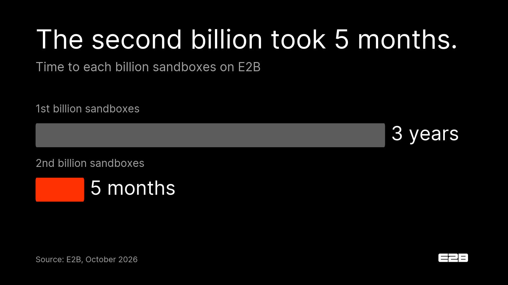

LinkedIn · from Vasek's personal profile
After 2 billion sandboxes, we can usually tell what your agent will need before it even starts.
Which tools it will reach for, and how much CPU and memory it will need at peak.
That took a while to learn. When we started in 2023, an agent might succeed 3 times out of 10, and our first billion sandboxes took 3 years. The second billion took 5 months. Today agents are 61% of our traffic, and many of them work for hours on real company data.
For a team running agents, that knowledge is the difference between sizing every machine for the worst case and giving each agent the right environment before it asks.
Most evaluations still stop at boot time and price per vCPU-hour. I'd add one question for any vendor, us included: how many agents like yours have you run, and what does the platform do differently because of it?
The alternative is building the platform yourself. Genspark's CTO told us they couldn't have hit $250M ARR if five of their engineers had been building a sandbox platform instead of the agent.
What did your agent need in production that the demo never showed you?

First comment, from Vasek
I wrote up how we got here and where we're taking it next, an agent-driven cloud that sets itself up for each task: https://e2b.dev/resources/sandboxes-are-dead